Tobias is the lighthouse keeper, responsible for ensuring the light shines brightly to guide ships safely through the night. He takes pride in his work because he knows just how important it is for the sailors out at sea. As a result, he is always prepared for any situation that may arise.
Surveying Supplies

Icon made by People illustrations by Storyset from @flaticon. Tobias is surveying the supplies of the lighthouse to ensure everything is in order for the night ahead.
Every night, Tobias checks the inventory of the lighthouse to make sure all the necessary supplies are stocked. He checks the fuel for the primary generators, ensures the backup generator is working, and makes sure there are enough provisions for any emergencies. This routine is crucial to maintaining the safety of the ships that rely on his lighthouse.
Broken Light! Oh No!
Icon made by People illustrations by Storyset from @flaticon. As night falls, Tobias finds that the light for the lighthouse is broken!
As Tobias was scaling the stairs of the lighthouse, he heard crack and looked up. Just in time, he managed to dodge the falling light bulb. It hit the ground with a heartbreaking shatter. With a sinking feeling, Tobias realized that he needed to act quickly to fix the light before any ships came near the rocky shore.
Quick Fix
Icon made by Work illustrations by Storyset from @flaticon. Tobias quickly rushes to repair the light before any ships come near the rocky shore.
Tobias urgently gets to work, understanding that he does not have time to waste. First things forst, he needed to repair the light fixture to ensure it was safe to replace the bulb. He carefully removes the broken pieces and checks the wiring to make sure everything is intact. With a deep breath, makes his way to the storage room to find a replacement bulb.
Replacing the Bulb
Icon made by People illustrations by Storyset from @flaticon. With determination, Tobias manages to fix the light just in time by replacing the bulb.
After finding the replacement bulb, Tobias carefully installs it into the fixture. He tests the light to ensure it is working properly. To his relief, it shines brightly once again. With the light repaired, Tobias heaves a sigh of relief that any danger was avoided.
The Lighthouse: Repaired!
Icon made by Transport illustrations by Storyset from @flaticon. The lighthouse beam shines brightly once more, guiding ships safely through the night.
With the light repaired, Tobias can finally relax. He watches as the beam of light shines brightly across the dark sea, guiding ships safely through the night. He feels a sense of pride and accomplishment knowing that he was able to fix the light in time to prevent any accidents. The lighthouse stands tall and strong, ready to continue its important work for many nights to come.